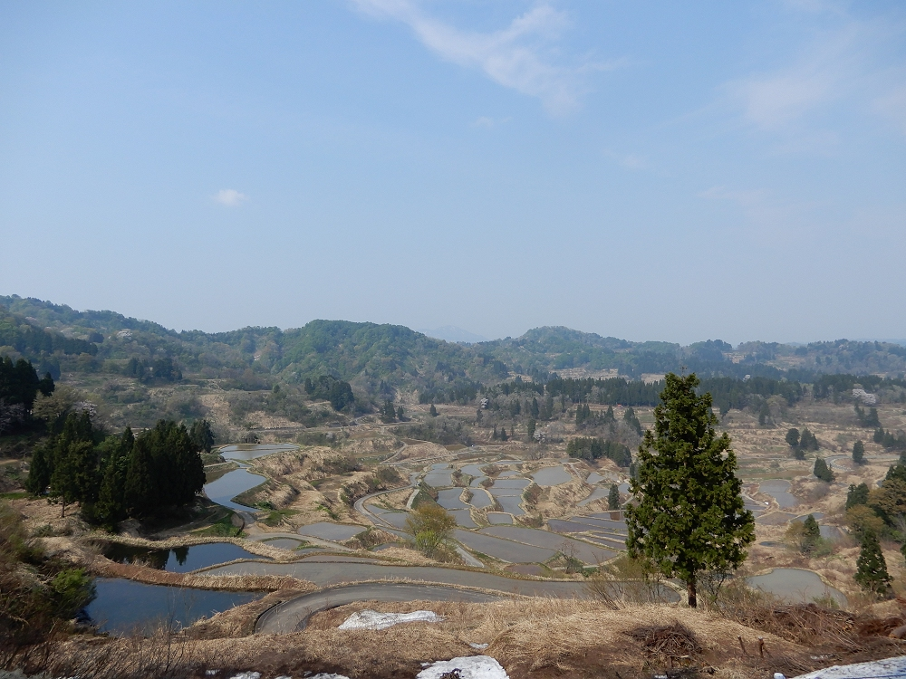
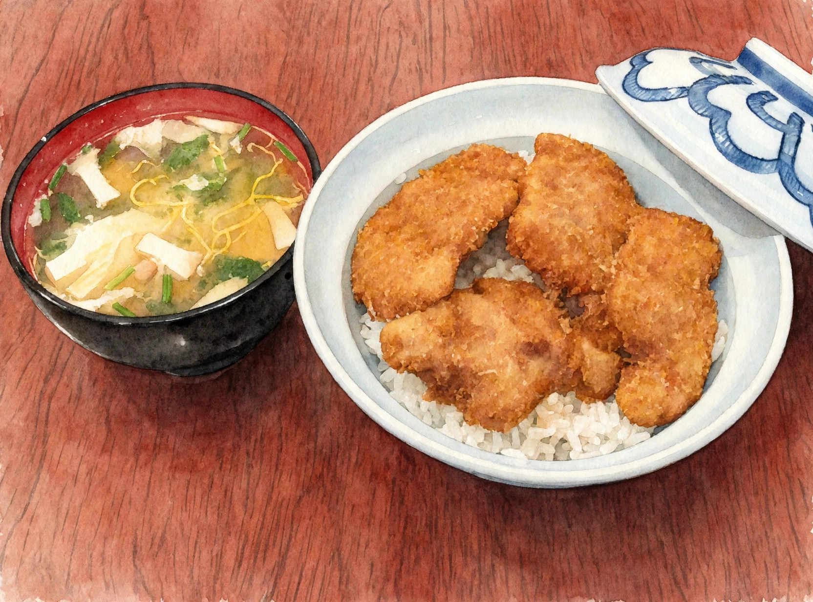

Chosen twice
In autumn 2026, two of America's leading travel magazines published their lists of where to go in 2027. Niigata Prefecture, on the Sea of Japan coast of Honshu, appears in both — as the only destination in Japan in each list. According to the Niigata Prefecture Tourism Association, it is the first time since 2013 that the same Japanese prefecture has been chosen by two of the US "big three" travel magazines (National Geographic, Condé Nast Traveler, Travel + Leisure) in the same year.
Reason one: art across 200 villages
Both magazines lead with the Echigo-Tsumari Art Triennale, one of the world's largest art festivals, held in the mountain villages of Tokamachi and Tsunan. Its 10th edition runs from 17 July to 7 November 2027. Artworks stand in rice fields, closed schools and empty houses across some 200 villages — art used, as Condé Nast Traveler put it, to revive a rural region of terraced paddies and beech forest, the landscape Japanese call satoyama.


Names the magazines singled out include the Tunnel of Light at Kiyotsu Gorge (MAD Architects) and Christian Boltanski's The Last Class, installed in a closed village school. Condé Nast Traveler framed the region as an answer to overtourism: skip Japan's big cities, it argues, and travel where visitors help keep a countryside alive.

One more artist, 150 years earlier. Anyone who comes for Boltanski should also see Ishikawa Unchō (1814–1883), the master woodcarver called "the Michelangelo of Echigo". At Saifukuji temple in Uonuma, on the road between the Triennale hills and Niigata City, the ceiling of the Kaizandō hall is covered by his carving of the Zen founder Dōgen subduing a tiger — painted wood so dense and alive that the temple is nicknamed "the Nikkō of Echigo". Unchō, too, worked the border between life and death: a pillar in the hall hides a ghost whose expression changes with the angle of view. Two artists, a century and a half apart, asking the same question in the same snow country.
And eat while you are there. Tokamachi, the Triennale's main stage, is also one of Niigata's great soba towns — the home of hegisoba. Three names to know: Kojimaya Sōhonten, founded in 1922, whose first master is credited with the funori-seaweed binder itself; Yoshiya, a hegisoba-and-tempura shop once favoured by the artist Tarō Okamoto; and Matsuo in Matsudai, serving hand-cut funori soba with mountain-vegetable tempura right beside the artworks.
Reason two: a culture of fermentation
National Geographic's second reason is taste. Niigata's heavy snow, pure water and rice have supported centuries of fermentation — sake, miso and soy sauce. The prefecture has 88 sake breweries, more than any other in Japan, and in winter many open their doors for tastings.
In Settaya, a brewing district of Nagaoka City, a self-guided walking route of about a mile — the “Hakko Trip” — links an old miso storehouse, a historic dango shop and bakery, and a sake brewery founded in 1548. Its restaurant HAKKO HOUSE, run by chef Sho Suzuki, serves an 11-course menu built entirely on fermented foods, each course paired with sake. The place to taste it all is Ponshukan, the sake hall inside Echigo-Yuzawa Station — the gateway to the Triennale country. For ¥500, its wall of tasting machines pours five small cups of your choice, drawn from the flagship labels of breweries across the prefecture. Niigata City has its own Ponshukan inside Niigata Station, too.
Once a year, it all gathers in one hall. Niigata Sake no Jin, held each March at Toki Messe in Niigata City, is one of Japan's largest sake festivals: more than 80 of the prefecture's breweries pour over 500 labels in a single weekend. Before the pandemic it drew 140,000 visitors in two days; today entry is capped, split into morning and afternoon sessions. Sake lovers travel in from across Japan for it.
If you know wine, this will feel familiar: sake, too, is chosen to match the dish. And the food that goes with it has its own names — tsumami, or ate in western Japan — small plates meant to be enjoyed slowly, together with the cup.
Furumachi, in Niigata City, is where those sake lovers gather: high-end restaurants and humble drinking spots stand side by side along its streets. In the Edo period, Furumachi was counted among Japan's three great geisha districts, named alongside Shinbashi in Tokyo and Gion in Kyoto — and if you are lucky, walking these streets today you may still pass a geigi, a geisha in full kimono, on her way to an evening engagement. It is an easy trip from Toki Messe, the festival hall — so make dinner in Furumachi, with sake and tsumami, part of the day. And if you tire of sake and Japanese food, rest assured: French and Italian restaurants are scattered through the same streets, and they are good.
The author's own picks for a Furumachi night — a personal list, not a ranking:
- Sake to Meshi Kokon — more than 20 sake labels from across Japan, all ¥500 a glass, with carefully made creative dishes. A grown-up sake bar.
- Niigata Furumachi Jikon — kappo-level Japanese cooking with an izakaya's ease, built on Niigata ingredients.
- Yakitori Matsumoto — yakitori grilled over Kishū binchōtan charcoal.
- Furumachi Saitō — reservation only, eight seats, a single omakase course of many small tsumami dishes. A drinker's restaurant.
- Teppan Bichō Sumibiyaki Jō — for those who like it rich: Niigata wagyu steak and teppan cooking, open late.
- Bar FARO — the bar for a final drink.
- Ryūto Furumachi Shunsai Suzuya — and the first place to send a visitor: a former geisha house turned restaurant, serving Niigata's local dishes and jizake in the old hanamachi atmosphere.
And if money is no object:
- Ryōtei Nabedyaya — founded in 1846; a registered cultural property at the heart of the geisha district, where geigi can still be called to your room.
- Nihon Ryōri Sekka — monthly-changing kaiseki built on Niigata's seasons, up to A5 Murakami beef.
- Nihon Ryōri Ikimitei — nearly 300 years old; kaiseki served in detached rooms across a 6,600 m² garden.
- Kyodai Zushi — omakase only, “Niigata-mae” sushi from local ingredients alone (see the sushi feature).
- Tokiwa Zushi, Niigata — the Niigata branch of Shibata's celebrated shop; 99% Niigata ingredients, down to the seasonings.
→ The complete list: all of Niigata's sake breweries, by region
→ Sushi in Niigata City: where the fish and the rice are both local

Snow country, and an island of gold
Niigata is one of the snowiest inhabited places on Earth — up to 12 metres (40 feet) of snow can fall in its mountains — with 55 ski resorts, from Yuzawa (about an hour from Tokyo by bullet train) to Myoko. Offshore lies Sado Island, whose gold mines were inscribed as a UNESCO World Heritage Site in 2024. In summer 2027 the island's Earth Celebration festival, built around the Kodo taiko drummers, marks its 40th edition; the island is also home to the revived toki crested ibis and the little tarai-bune tub boats.
Yuzawa's access is spectacular in itself: a ropeway toward the slopes leaves just minutes from Echigo-Yuzawa Station, and in winter the Shinkansen opens GALA Yuzawa Station — a seasonal station directly connected to the ski slopes. Step off the train, and you are at the gondola.
And from a local: what we would add
This guide is made by someone who lives in Niigata Prefecture. The two magazines chose well — but they only had a page each. Living here, we would add these.
- Ponshukan, honestly. Even locals stand in front of that wall of sake amazed at the variety. Taste five small cups and you will understand why this prefecture ferments.
- The Triennale never really closes. Around 200 artworks stay in the villages all year. Visit outside the festival and a closed-school installation in the snow may be yours alone.
- Winter is the real Niigata. Snow here is not a backdrop; it is an ingredient. It sweetens stored vegetables, deepens the sake, and turns familiar places — Bandai Bridge, Yahiko Shrine — into somewhere else entirely.
- Eat what Niigata eats. Skip the famous names and order what people here order without thinking: a curry-spiced half chicken, fried whole, at Sekitori; hegisoba — buckwheat noodles kneaded with funori seaweed, served in neat folded bundles on a wooden tray; and tare-katsudon, a pork cutlet dipped in sweet soy sauce over rice, with no egg. Three dishes, one prefecture's table.



Getting there
- Tokyo → Echigo-Yuzawa: about 1 hour by Jōetsu Shinkansen. From here, most Triennale visitors ride the Hokuhoku Line on to Matsudai or Tokamachi station, in the heart of the art country — so the Ponshukan tasting wall inside Echigo-Yuzawa Station is on almost every visitor's route. The town is also the setting of Snow Country, the novel by Nobel laureate Yasunari Kawabata.
- Rock fans, remember the name Yuzawa: every July, the Fuji Rock Festival fills the Naeba ski resort in Yuzawa Town — Japan's biggest outdoor music festival. Oasis, Radiohead, Bob Dylan and Björk have all played its main stage.
- Tokyo → Niigata City: about 2 hours by Jōetsu Shinkansen.
- Sado Island: ferries and jetfoils from Niigata Port (about 1 hour by jetfoil).
- The Echigo-Tsumari area is rural — a rental car or the festival's tour buses make it far easier to explore.
Read the originals
- National Geographic — Best of the World 2027 and its Niigata guide
- Condé Nast Traveler — The 27 Best Places to Go in 2027
- Discover Niigata — the prefecture's official English travel site
For readers of Japanese: a five-part series reading both magazines' original articles in depth — 「新潟はなぜ選ばれたのか」on note.